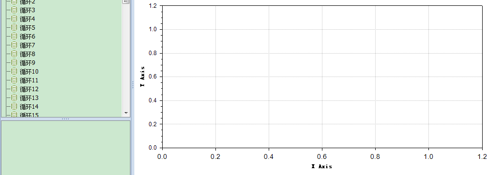

在使用ZedGraph生成多条曲线时为了能区分曲线颜色，要求随机设置曲线颜色。
首先从System.Drawing.Color中获取所有颜色的对象的数组，然后将其顺序打乱随机排序，然后在生成曲线时从Color数组中取Color并赋值。

注：
博客主页：
https://blog.csdn.net/badao_liumang_qizhi
关注公众号
霸道的程序猿
获取编程相关电子书、教程推送与免费下载。
单纯生成曲线的代码
LineItem myCurve = myPane.AddCurve(yList[i].Title, list, curveColor, SymbolType.None);第一个参数：图例标题
第二个参数：坐标点的list
第三个参数：颜色Color对象
第四个参数：曲线节点符号
所以在生成曲线时就要在第三个参数上进行修改
首先获取Color的所有颜色对象
//用于存取取出的颜色对象
List<Color> colorList = new List<Color>();
//通过GetMember获取所有的公共成员
foreach (var item in typeof(Color).GetMembers())
{
//只取属性且为属性中的已知Color，剔除byte属性以及一些布尔属性等（A B G R IsKnownColor Name等）
if (item.MemberType == System.Reflection.MemberTypes.Property && System.Drawing.Color.FromName
(item.Name).IsKnownColor == true)
{
Color color = System.Drawing.Color.FromName(item.Name);
colorList.Add(color);
}
}
//转成数组
Color[] colors = colorList.ToArray();
然后将Color数组的顺序进行打乱
colors = GetDisruptedItems(colors);
调用乱序方法
private static Color[] GetDisruptedItems(Color[] colors)
{
//生成一个新数组：用于在之上计算和返回
Color[] temp;
temp = new Color[colors.Length];
for (int i = 0; i < temp.Length; i++)
{
temp[i] = colors[i];
}
//打乱数组中元素顺序
Random rand = new Random(DateTime.Now.Millisecond);
for (int i = 0; i < temp.Length; i++)
{
int x, y; Color t;
x = rand.Next(0, temp.Length);
do
{
y = rand.Next(0, temp.Length);
} while (y == x);
t = temp[x];
temp[x] = temp[y];
temp[y] = t;
}
return temp;
}
然后在循环生成曲线时，循环条件为要生成的曲线数量与颜色数组的长度进行对比判断。
int index = 0;
//循环添加曲线
foreach(DataTreeNode node in Global.Instance.PrepareCompareDataInOne)
{
list = SetCurveTextInOne(yList[i].TitleKey,record);
//如果要生成的曲线数量 < 颜色数组长度 那么就从颜色数组中去按索引取
Color curveColor = new Color();
if (Global.Instance.PrepareCompareDataInOne.Count < colors.Length)
{
curveColor = colors[index];
}
//否则要生成的曲线数量 > 颜色数组长度
else
{
//当索引达到颜色数组的长度时 索引置0
if (index >= colors.Length)
{
index = 0;
}
curveColor = colors[index];
}
LineItem myCurve = myPane.AddCurve(yList[i].Title, list, curveColor, SymbolType.None);
index++;
}
其中Global.Instance.PrepareCompareDataInOne就是要生成的曲线的数据，其Count就是要生成的曲线数量。